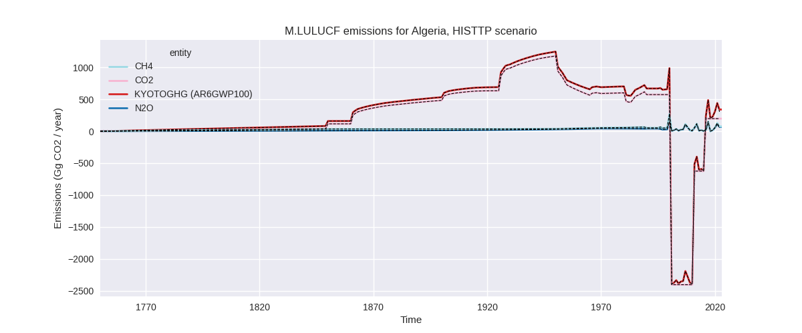

Changes in PRIMAP-hist v2.6_final compared to v2.5.1_final for Algeria
2024-09-24
Johannes Gütschow
Change analysis for Algeria for PRIMAP-hist v2.6_final compared to v2.5.1_final
Overview over emissions by sector and gas
The following figures show the aggregate national total emissions excluding LULUCF AR6GWP100 for the country reported priority scenario. The dotted linesshow the v2.5.1_final data.
The following figures show the aggregate national total emissions excluding LULUCF AR6GWP100 for the third party priority scenario. The dotted linesshow the v2.5.1_final data.

Overview over changes
In the country reported priority scenario we have the following changes for aggregate Kyoto GHG and national total emissions excluding LULUCF (M.0.EL):
- Emissions in 2022 have changed by -13.8%% (-39958.16 Gg CO2 / year)
- Emissions in 1990-2022 have changed by -21.6%% (-45181.86 Gg CO2 / year)
In the third party priority scenario we have the following changes for aggregate Kyoto GHG and national total emissions excluding LULUCF (M.0.EL):
- Emissions in 2022 have changed by 3.1%% (8982.63 Gg CO2 / year)
- Emissions in 1990-2022 have changed by 0.2%% (365.73 Gg CO2 / year)
Most important changes per scenario and time frame
In the country reported priority scenario the following sector-gas combinations have the highest absolute impact on national total KyotoGHG (AR6GWP100) emissions in 2022 (top 5):
- 1: 1.B.2, CH4 with -28126.07 Gg CO2 / year (-45.7%)
- 2: 1.B.2, CO2 with -14566.93 Gg CO2 / year (-84.2%)
- 3: 4, CH4 with -11996.18 Gg CO2 / year (-56.5%)
- 4: 1.A, CO2 with 8909.13 Gg CO2 / year (5.8%)
- 5: 3.A, CH4 with 6026.30 Gg CO2 / year (76.8%)
In the country reported priority scenario the following sector-gas combinations have the highest absolute impact on national total KyotoGHG (AR6GWP100) emissions in 1990-2022 (top 5):
- 1: 1.B.2, CH4 with -31066.74 Gg CO2 / year (-52.0%)
- 2: 1.B.2, CO2 with -9093.44 Gg CO2 / year (-71.7%)
- 3: 4, CH4 with -8358.03 Gg CO2 / year (-59.5%)
- 4: 1.A, CO2 with -7701.43 Gg CO2 / year (-7.7%)
- 5: 2, CO2 with 6433.95 Gg CO2 / year (74.5%)
In the third party priority scenario the following sector-gas combinations have the highest absolute impact on national total KyotoGHG (AR6GWP100) emissions in 2022 (top 5):
- 1: 1.A, CO2 with 8837.89 Gg CO2 / year (5.8%)
- 2: 5, N2O with 144.35 Gg CO2 / year (20.7%)
- 3: 1.B.2, CO2 with -47.09 Gg CO2 / year (-0.3%)
- 4: 2, HFCS (AR6GWP100) with 37.05 Gg CO2 / year (1.5%)
- 5: 4, N2O with -21.22 Gg CO2 / year (-2.9%)
In the third party priority scenario the following sector-gas combinations have the highest absolute impact on national total KyotoGHG (AR6GWP100) emissions in 1990-2022 (top 5):
- 1: 1.A, CO2 with 286.44 Gg CO2 / year (0.3%)
- 2: 5, N2O with 55.74 Gg CO2 / year (13.4%)
- 3: 1.B.2, CO2 with 7.60 Gg CO2 / year (0.1%)
- 4: 2, HFCS (AR6GWP100) with 1.12 Gg CO2 / year (0.1%)
- 5: 4, N2O with 0.42 Gg CO2 / year (0.1%)
Notes on data changes
Here we list notes explaining important emissions changes for the country. ’' means that the following text only applies to the TP time series, while means that it only applies to the CR scenario. Otherwise the note applies to both scenarios.
- Country reported emissions are lower in both 2022 (14%) and cumulatively (22%). In earlier PRIMAP-hist versions there was no country reported data included.
- The main contributors to lower emissions are fugitive emissions from oil and gas (1.B.2) for CO2 and CH4, and waste CH4 (all between 45 and 85% both for 2022 and cumulatively).
- For 2022 energy CO2 emissions are 5.8% higher than in PRIMAP-hist v2.5.1 while they are 7.7% lower for cumulative emissions. The reason is that BUR1 emissions are lower than emissions in PRIMAP-hist v2.5.1 until 2009 and higher from 2010 on due to a high increase in energy industry (1.A.1) emissions from 2009 to 2010 in BUR1.
- The post 2009 emissions are much more in line with third party estimates than the 1990-2009 emissions.
- The metal industry (2.C) also show a significant increase in emissions leading to 75% higher cumulative CO2 emissions in the IPPU sector. As the emissions go down for recent years the influence in 2022 is low.
- Livestock CH4 emissions are over 70% higher in BUR1 and PRIMAP-hist v2.6 than in PRIMAP-hist v2.5.1 and FAO data.
- Changes in sector 5 are due to the removal of FAOSTAT data (TP).
Changes by sector and gas
For each scenario and time frame the changes are displayed for all individual sectors and all individual gases. In the sector plot we use aggregate Kyoto GHGs in AR6GWP100. In the gas plot we usenational total emissions without LULUCF. ## country reported scenario
2022
1990-2022
third party scenario
2022
1990-2022
Detailed changes for the scenarios:
country reported scenario (HISTCR):
Most important changes per time frame
For 2022 the following sector-gas combinations have the highest absolute impact on national total KyotoGHG (AR6GWP100) emissions in 2022 (top 5):
- 1: 1.B.2, CH4 with -28126.07 Gg CO2 / year (-45.7%)
- 2: 1.B.2, CO2 with -14566.93 Gg CO2 / year (-84.2%)
- 3: 4, CH4 with -11996.18 Gg CO2 / year (-56.5%)
- 4: 1.A, CO2 with 8909.13 Gg CO2 / year (5.8%)
- 5: 3.A, CH4 with 6026.30 Gg CO2 / year (76.8%)
For 1990-2022 the following sector-gas combinations have the highest absolute impact on national total KyotoGHG (AR6GWP100) emissions in 1990-2022 (top 5):
- 1: 1.B.2, CH4 with -31066.74 Gg CO2 / year (-52.0%)
- 2: 1.B.2, CO2 with -9093.44 Gg CO2 / year (-71.7%)
- 3: 4, CH4 with -8358.03 Gg CO2 / year (-59.5%)
- 4: 1.A, CO2 with -7701.43 Gg CO2 / year (-7.7%)
- 5: 2, CO2 with 6433.95 Gg CO2 / year (74.5%)
Changes in the main sectors for aggregate KyotoGHG (AR6GWP100) are
- 1: Total sectoral emissions in 2022 are 199139.96
Gg CO2 / year which is 80.1% of M.0.EL emissions. 2022 Emissions have
changed by -14.5% (-33769.18 Gg CO2
/ year). 1990-2022 Emissions have changed by -27.8% (-48034.19 Gg CO2 / year). For 2022
the changes per gas
are:

For 1990-2022 the changes per gas are:
The changes come from the following subsectors:- 1.A: Total sectoral emissions in 2022 are 162979.76
Gg CO2 / year which is 81.8% of category 1 emissions. 2022 Emissions
have changed by 5.8% (8979.83 Gg CO2
/ year). 1990-2022 Emissions have changed by -7.8% (-7816.05 Gg CO2 / year). For 2022
the changes per gas
are:

For 1990-2022 the changes per gas are:
There is no subsector information available in PRIMAP-hist. - 1.B.1: Total sectoral emissions in 2022 are 4.48 Gg
CO2 / year which is 0.0% of category 1 emissions. 2022 Emissions have
changed by -3.3% (-0.15 Gg CO2 /
year). 1990-2022 Emissions have changed by -3.5% (-12.21 Gg CO2 / year). For 2022 the
changes per gas
are:
For 1990-2022 the changes per gas are:
There is no subsector information available in PRIMAP-hist. - 1.B.2: Total sectoral emissions in 2022 are
36155.72 Gg CO2 / year which is 18.2% of category 1 emissions. 2022
Emissions have changed by -54.2%
(-42748.86 Gg CO2 / year). 1990-2022 Emissions have changed by -55.5% (-40205.92 Gg CO2 / year). For 2022
the changes per gas
are:
For 1990-2022 the changes per gas are:
There is no subsector information available in PRIMAP-hist.
- 1.A: Total sectoral emissions in 2022 are 162979.76
Gg CO2 / year which is 81.8% of category 1 emissions. 2022 Emissions
have changed by 5.8% (8979.83 Gg CO2
/ year). 1990-2022 Emissions have changed by -7.8% (-7816.05 Gg CO2 / year). For 2022
the changes per gas
are:
- 2: Total sectoral emissions in 2022 are 18731.83 Gg
CO2 / year which is 7.5% of M.0.EL emissions. 2022 Emissions have
changed by -6.4% (-1278.65 Gg CO2 /
year). 1990-2022 Emissions have changed by 53.3% (5655.17 Gg CO2 / year). For 2022
the changes per gas
are:
For 1990-2022 the changes per gas are: - M.AG: Total sectoral emissions in 2022 are 20452.67
Gg CO2 / year which is 8.2% of M.0.EL emissions. 2022 Emissions have
changed by 55.9% (7334.27 Gg CO2 /
year). 1990-2022 Emissions have changed by 54.2% (5550.68 Gg CO2 / year). For 2022
the changes per gas
are:
For 1990-2022 the changes per gas are:
The changes come from the following subsectors:- 3.A: Total sectoral emissions in 2022 are 18201.25
Gg CO2 / year which is 89.0% of category M.AG emissions. 2022 Emissions
have changed by 130.2% (10294.30 Gg
CO2 / year). 1990-2022 Emissions have changed by 129.4% (7906.59 Gg CO2 / year). For 2022
the changes per gas
are:
For 1990-2022 the changes per gas are:
There is no subsector information available in PRIMAP-hist. - M.AG.ELV: Total sectoral emissions in 2022 are
2251.42 Gg CO2 / year which is 11.0% of category M.AG emissions. 2022
Emissions have changed by -56.8%
(-2960.03 Gg CO2 / year). 1990-2022 Emissions have changed by -57.0% (-2355.91 Gg CO2 / year). For 2022
the changes per gas
are:
For 1990-2022 the changes per gas are:
There is no subsector information available in PRIMAP-hist.
- 3.A: Total sectoral emissions in 2022 are 18201.25
Gg CO2 / year which is 89.0% of category M.AG emissions. 2022 Emissions
have changed by 130.2% (10294.30 Gg
CO2 / year). 1990-2022 Emissions have changed by 129.4% (7906.59 Gg CO2 / year). For 2022
the changes per gas
are:
- 4: Total sectoral emissions in 2022 are 10426.23 Gg
CO2 / year which is 4.2% of M.0.EL emissions. 2022 Emissions have
changed by -52.5% (-11546.46 Gg CO2
/ year). 1990-2022 Emissions have changed by -54.5% (-7937.53 Gg CO2 / year). For 2022
the changes per gas
are:
For 1990-2022 the changes per gas are: - 5: Total sectoral emissions in 2022 are 0.00 Gg CO2
/ year which is 0.0% of M.0.EL emissions. 2022 Emissions have changed by
-100.0% (-698.13 Gg CO2 / year).
1990-2022 Emissions have changed by -100.0% (-415.99 Gg CO2 / year). For 2022
the changes per gas
are:
For 1990-2022 the changes per gas are:
third party scenario (HISTTP):
Most important changes per time frame
For 2022 the following sector-gas combinations have the highest absolute impact on national total KyotoGHG (AR6GWP100) emissions in 2022 (top 5):
- 1: 1.A, CO2 with 8837.89 Gg CO2 / year (5.8%)
- 2: 5, N2O with 144.35 Gg CO2 / year (20.7%)
- 3: 1.B.2, CO2 with -47.09 Gg CO2 / year (-0.3%)
- 4: 2, HFCS (AR6GWP100) with 37.05 Gg CO2 / year (1.5%)
- 5: 4, N2O with -21.22 Gg CO2 / year (-2.9%)
For 1990-2022 the following sector-gas combinations have the highest absolute impact on national total KyotoGHG (AR6GWP100) emissions in 1990-2022 (top 5):
- 1: 1.A, CO2 with 286.44 Gg CO2 / year (0.3%)
- 2: 5, N2O with 55.74 Gg CO2 / year (13.4%)
- 3: 1.B.2, CO2 with 7.60 Gg CO2 / year (0.1%)
- 4: 2, HFCS (AR6GWP100) with 1.12 Gg CO2 / year (0.1%)
- 5: 4, N2O with 0.42 Gg CO2 / year (0.1%)
Changes in the main sectors for aggregate KyotoGHG (AR6GWP100) are
- 1: Total sectoral emissions in 2022 are 241699.94
Gg CO2 / year which is 81.2% of M.0.EL emissions. 2022 Emissions have
changed by 3.8% (8790.80 Gg CO2 /
year). 1990-2022 Emissions have changed by 0.2% (294.04 Gg CO2 / year). For 2022 the
changes per gas
are:
The changes come from the following subsectors:- 1.A: Total sectoral emissions in 2022 are 162837.82
Gg CO2 / year which is 67.4% of category 1 emissions. 2022 Emissions
have changed by 5.7% (8837.89 Gg CO2
/ year). 1990-2022 Emissions have changed by 0.3% (286.44 Gg CO2 / year). For 2022 the
changes per gas
are:
There is no subsector information available in PRIMAP-hist. - 1.B.1: Total sectoral emissions in 2022 are 4.64 Gg CO2 / year which is 0.0% of category 1 emissions. 2022 Emissions have changed by 0.0% (0.00 Gg CO2 / year). 1990-2022 Emissions have changed by 0.0% (0.00 Gg CO2 / year).
- 1.B.2: Total sectoral emissions in 2022 are 78857.49 Gg CO2 / year which is 32.6% of category 1 emissions. 2022 Emissions have changed by -0.1% (-47.09 Gg CO2 / year). 1990-2022 Emissions have changed by 0.0% (7.60 Gg CO2 / year).
- 1.A: Total sectoral emissions in 2022 are 162837.82
Gg CO2 / year which is 67.4% of category 1 emissions. 2022 Emissions
have changed by 5.7% (8837.89 Gg CO2
/ year). 1990-2022 Emissions have changed by 0.3% (286.44 Gg CO2 / year). For 2022 the
changes per gas
are:
- 2: Total sectoral emissions in 2022 are 20073.21 Gg CO2 / year which is 6.7% of M.0.EL emissions. 2022 Emissions have changed by 0.3% (62.73 Gg CO2 / year). 1990-2022 Emissions have changed by 0.1% (15.35 Gg CO2 / year).
- M.AG: Total sectoral emissions in 2022 are 13118.40 Gg CO2 / year which is 4.4% of M.0.EL emissions. 2022 Emissions have changed by 0.0% (0.00 Gg CO2 / year). 1990-2022 Emissions have changed by 0.0% (0.00 Gg CO2 / year).
- 4: Total sectoral emissions in 2022 are 21957.44 Gg CO2 / year which is 7.4% of M.0.EL emissions. 2022 Emissions have changed by -0.1% (-15.24 Gg CO2 / year). 1990-2022 Emissions have changed by 0.0% (0.60 Gg CO2 / year).
- 5: Total sectoral emissions in 2022 are 842.48 Gg
CO2 / year which is 0.3% of M.0.EL emissions. 2022 Emissions have
changed by 20.7% (144.35 Gg CO2 /
year). 1990-2022 Emissions have changed by 13.4% (55.74 Gg CO2 / year). For 2022 the
changes per gas
are:
For 1990-2022 the changes per gas are: